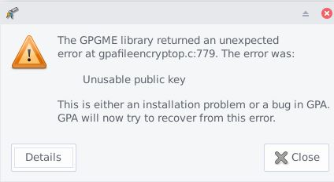

Hi all,
I would like to know if generating a PGP key with a number of 4096 bits is still possible and if so how?
On my GNU Privacy Assistant and can’t go above of 3072 anymore.
Why that changed and how to make a new key that match my needs.
What do you suggest as alternative as GPA 0.10.0 is as default installed.
Thanks
GPA is just a frontend for gpg. If you see the dependency: dpkg -s gpa, you will see gnupg listed there.
To set all parameters, use this option on the terminal:
gpg --full-generatey-key
Second question will be of how long should be the key.
Encountering any trouble, man gpg is your best friend.
2 Likes
Hello nyxor
Indeed I found that tutorial and I was able to solve the issue.
Thanks for your message and have a nice day.
related:
Hi,
Thanks to all the members involved in this thread.
I know this is not a specific bug of Whonix but as I started the topic here I would like to update it. I also think I can reach a wider range of people on that forum.
Maybe it can help some other users around the globe.
So the issue is when I create a PGP key using the command line, the key is buggy and corrupt.

Anybody has been faced to that problem?
Thanks for your contribution and help.
Regards
Thanks Patrick
I have some reading 
Not enough information here to understand. What corrupt means? Steps to reproduce? What is the error message?
- create a key using the commande line. using this tuto
- importing the keys (publc/privat) into GPA 0.10.0 (no error message, keys are visible)
- encrypting a message with the public key.
- decvrypting the messge with the private key => gives that error

Also regsitering in a web site that requires 2FA authentification doesn’t work with that key in particular. (even tried 2 sites with same issue)
I remain to your disposal for more information if requested.
Thanks.
Edit : Don’t want to use Kleopatra on Windows even if that solution solves the problem.
Could not reproduce, created a testing key, encrypted and sign to its key and then decrypted and no errors found.
Thanks for your test.
Well, I’m going to try the procedure from the beginning on again
I’ll let you informed.
Again thank you for your time.
Hi nyxnor
Sorry for being late.
Solved 
Thanks
1 Like